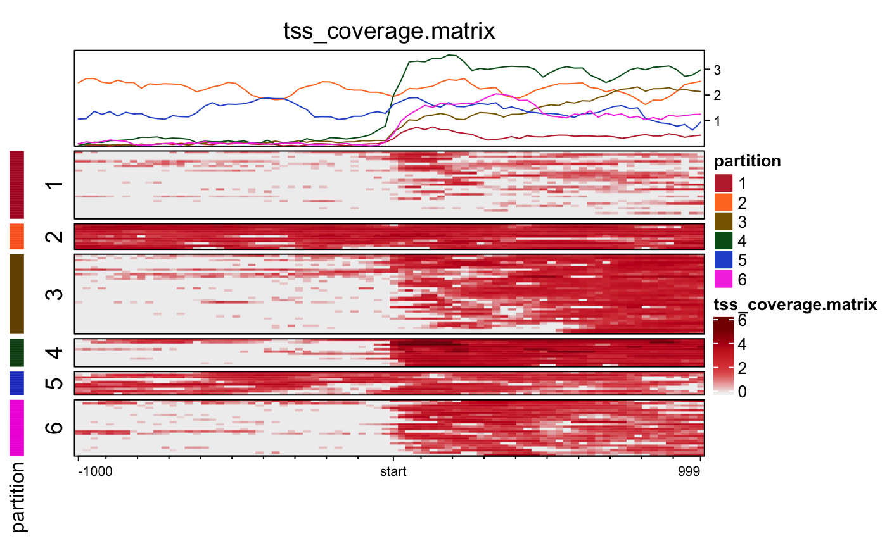

Import genome coverage matrix files
coverage_matrix2nmat(x = NULL, filename = NULL, signal_name = NULL, target_name = "target", background = 0, smooth = FALSE, target_is_single_point = FALSE, signal_is_categorical = FALSE, mat_grep = "[-0-9]+:[-0-9]+", upstream_grep = "^[-]", downstream_grep = "^[^-]", target_grep = "^0$", verbose = FALSE, ...)
| x |
|
|---|---|
| filename | character path to a genome coverage file.
When |
| signal_name | The name of signal regions. It is only used
for printing the object. When |
| target_name | The name of the target names. It is only used for printing the object. |
| background | numeric value containing the background value in the matrix. |
| smooth | logical whether to apply smoothing on rows. |
| target_is_single_point, signal_is_categorical | logical indicating whether the target region is a single point, and whether signal matrix is categorical, respectively. |
| mat_grep | character regular expression pattern used
to identify colnames which contain coverage data. The
default pattern expects the format |
| upstream_grep | character regular expression pattern
used to identify upstream colnames from values that
match |
| downstream_grep | character regular expression pattern
used to identify upstream colnames from values that
match |
| target_grep | character regular expression pattern
used to identify a colname referring to the |
| verbose | logical indicating whether to print verbose output. |
| ... | additional arguments are ignored. |
normalizedMatrix numeric matrix, where additiona
metadata is stored in the object attributes. See
EnrichedHeatmap::as.normalizedMatrix() for more
details about the metadata. The rownames are defined
by the first colname which does not match
mat_grep, which by default is "Gene ID",
otherwise rownames are NULL.
This function imports genome coverage data matrix
and returns an object of class
normalizedMatrix compatible for use by the
package "EnrichedHeatmap".
There is a conversion function EnrichedHeatmap::as.normalizedMatrix(),
however this function does not call that function, in
favor of defining the attributes directly. In future, this
function may change to call that function.
## There is a small example file to use for testing cov_file <- system.file("data", "tss_coverage.matrix", package="platjam"); if (length(cov_file) > 0) { nmat <- coverage_matrix2nmat(cov_file); jamba::printDebug("signal_name: ", attr(nmat, "signal_name")); if (suppressPackageStartupMessages(require(EnrichedHeatmap))) { color <- "red3"; signal_name <- attr(nmat, "signal_name"); k <- 6; set.seed(123); partition <- kmeans(log10(1+nmat), centers=k)$cluster; EH <- EnrichedHeatmap(log10(1+nmat), split=partition, pos_line=FALSE, use_raster=TRUE, col=jamba::getColorRamp(color, n=10), top_annotation=HeatmapAnnotation( lines=anno_enriched(gp=gpar(col=colorjam::rainbowJam(k))) ), axis_name_gp=gpar(fontsize=8), name=signal_name, column_title=signal_name ); PHM <- Heatmap(partition, use_raster=TRUE, col=structure(colorjam::rainbowJam(k), names=as.character(seq_len(k))), name="partition", show_row_names=FALSE, width=unit(3, "mm")); draw(PHM + EH, main_heatmap=2); } }#> Warning: package 'colorspace' was built under R version 3.5.2#> ## (17:07:49) 05Aug2019: signal_name: tss_coverage.matrix#> Warning: package 'GenomeInfoDb' was built under R version 3.5.2